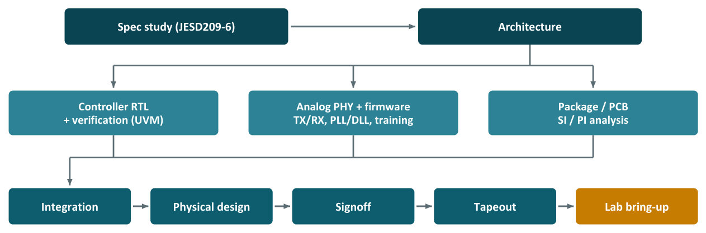

Chapter 16: Controllers, DRAM Chips and the Tools Behind Them¶
Chapter 15 showed how a small SRAM is designed. This chapter asks what the professionals do. It begins with the three very different jobs hidden in the phrase "designing LPDDR6", then follows the one most engineers actually do: the memory controller and PHY inside a system-on-chip. It lists the tools, the people, the lab equipment and the money involved, explains why a DRAM chip is a different order of undertaking, and shows what changes when memory is designed at an advanced logic node such as TSMC's 7 nm. All figures for cost, headcount and duration are rough orders of magnitude.
16.1 Three meanings of "designing LPDDR6"¶
"Designing LPDDR6" can mean three very different jobs.
| What you design | Who does it | Feasible for a student or startup? |
|---|---|---|
| A. The LPDDR6 DRAM chip itself | Samsung, SK hynix, Micron, CXMT | No: needs a DRAM fab at the 1γ/1c class and billions of dollars |
| B. The LPDDR6 controller and PHY inside the SoC | Qualcomm, MediaTek, Apple, Google; IP vendors Synopsys, Cadence, Rambus | Yes: this is where most jobs are; controller RTL is learnable |
| C. The package and board (PoP, PCB, signal integrity) | Phone and laptop makers (OEMs), package houses | Yes, with SI/PI tools |
The controller is digital logic that turns read and write requests from the SoC into DRAM commands with correct timing. The PHY (physical layer) is the mixed-signal circuitry that actually drives and receives the high-speed signals on the pins.
16.2 LPDDR5X versus LPDDR6¶
| Feature | LPDDR5X | LPDDR6 (JEDEC JESD209-6, 2025) |
|---|---|---|
| Data rate per pin | Up to ~10.7 Gbps | 10.667 Gbps rising to 14.4 Gbps |
| Channel width | 16-bit | 24-bit (two 12-bit sub-channels) |
| Burst | BL16 / BL32 | BL24, carrying 256 data bits plus metadata bits (for ECC and other uses) |
| Bandwidth per channel | ~21 GB/s | ~43 GB/s at 14.4 Gbps (raw) |
| Power | Single VDD2 rail | Dual VDD2 rails, low-voltage DVFS modes, efficiency mode that can turn off a sub-channel |
| Reliability | On-die ECC | On-die ECC, link protection and PRAC (rowhammer defence) |
| Signalling | NRZ | NRZ |
The exact values should be checked against the JEDEC document itself, which is freely available from jedec.org after registering. The numbers fit together as shown in Example 6.1: a 12-bit sub-channel with a burst of 24 moves 288 bits, 256 bits of data (32 bytes) plus 32 metadata bits.
16.3 Design flow for a controller and PHY¶

The middle row of Figure 16.1 runs in parallel. A first-time team typically needs about 2.5 to 3.5 years end to end (a rough estimate).
- Study the standard. Read JESD209-6 in depth: the command set, timing parameters, mode registers, training sequences and power states. Everything else is built on this.
- Architecture. The controller needs command queues; a scheduler that reorders requests to hit already-open rows and spread work across banks; a refresh manager; PRAC and ALERT handling; ECC and metadata logic; a power and DVFS manager; and a system bus interface such as AXI or CHI. The PHY needs a DFI interface to the controller (DFI is the standard controller-to-PHY interface); transmitters and receivers for the data (DQ), command/address (CA), write clock (WCK) and clock (CK) pins; PLLs and DLLs; phase interpolators; and ZQ calibration of driver strength. Training firmware on a small embedded microcontroller tunes the link at start-up: CA training, WCK-to-CK levelling, read and write DQ eye training, Vref training and duty-cycle correction.
- RTL design. Write the controller and the PHY's digital parts in SystemVerilog.
- Verification (50 to 70 per cent of the effort). Build UVM testbenches with an LPDDR6 VIP (verification IP: a ready-made model of the DRAM and protocol checker); add timing checkers for parameters such as \(t_{RCD}\) and \(t_{RP}\); use formal verification for control logic; and run long tests on emulators.
- Analogue PHY design. Design the transmitter with feed-forward equalisation (FFE), the receiver with continuous-time linear equalisation (CTLE) and decision-feedback equalisation (DFE), the samplers and the PLL/DLL. Simulate across PVT and with Monte Carlo, and meet a jitter budget.
- Signal and power integrity. Model the full channel (SoC bump, package, PoP or PCB, DRAM ball) and check eye diagrams at 14.4 Gbps, crosstalk and the impedance of the power delivery network, using IBIS-AMI models of the drivers and receivers.
- Physical design. Synthesis, place-and-route and timing closure with clocks in the 3.6 GHz class (14.4 Gbps divided by four), plus IR-drop and electromigration checks.
- Signoff and test-chip tapeout. Close every signoff check across all corners and tape out a test chip.
- Lab bring-up. Validate the silicon with high-bandwidth oscilloscopes, protocol analysers and bit-error-rate testers (BERTs), and run JEDEC compliance software.
A real programme is large: roughly 50 to 150 engineers working for 2 to 3 years on an advanced node such as 3 nm or 2 nm.
Example 16.1: Check the clock of the LPDDR6 interface
The source says physical design closes timing with "clocks in the 3.6 GHz class (14.4 Gbps divided by four)". Check: \(14.4 / 4 = 3.6\) GHz, so one internal clock cycle covers four bit times at the pins. A bit then lasts \(1/14.4 = 69.4\) ps and an internal cycle \(4 \times 69.4 = 278\) ps. For comparison, a DDR5-4800 bit lasts 208 ps.
A realistic learning path. Use Ramulator 2.0 or DRAMSim3 to explore memory-system architecture (scheduling policies, bank conflicts and refresh overhead). Study LiteDRAM, an open-source DDR3/DDR4/LPDDR4 controller, then write a simplified LPDDR controller in SystemVerilog and test it with Verilator and cocotb. Design a transmitter driver, a sampler or a simple DLL in SKY130 or GF180MCU using Xschem and ngspice. Get academic EDA licences through the Cadence and Synopsys university programmes, or, in India, through the MeitY Chips to Startup (C2S) programme.
16.4 Tools, infrastructure and people¶
EDA (electronic design automation) software is dominated by three vendors: Synopsys, Cadence and Siemens EDA. Table 16.1 pairs each stage with the main industry tools and, where one exists, a free tool for learning the same skill.
| Stage | Industry tools | Free / open-source for learning | Why it is needed |
|---|---|---|---|
| Architecture / modelling | SystemC/TLM, Synopsys Platform Architect | Ramulator 2.0, DRAMSim3, gem5 | Explore performance before writing RTL |
| RTL lint | SpyGlass, JasperGold Superlint, Questa Lint | Verilator lint | Catch coding mistakes early |
| CDC / RDC | SpyGlass CDC, Questa CDC, Conformal | none | Find clock- and reset-domain crossing bugs |
| Simulation | VCS, Xcelium, Questa | Verilator, Icarus, cocotb | Run testbenches on RTL |
| Verification IP | Synopsys / Cadence / Avery / Truechip | Your own simplified models | Model the DRAM and buses; check the protocol |
| Formal | JasperGold, VC Formal, Questa Formal | SymbiYosys | Prove properties exhaustively |
| Emulation / prototyping | Palladium Z3, ZeBu, HAPS | none | Run firmware and very long tests at MHz speed |
| Analogue schematic / layout | Cadence Virtuoso (dominant), Synopsys Custom Compiler | Xschem, Magic, KLayout | Custom PHY circuits |
| Circuit simulation | Spectre X / APS, PrimeSim (HSPICE, XA), Siemens AFS | ngspice, Xyce | Transistor-level accuracy |
| Parasitic extraction | StarRC, Quantus, Calibre xRC | Magic, OpenRCX | Real wire resistance and capacitance |
| SI / PI | HFSS / SIwave, Sigrity / Clarity, Keysight ADS | openEMS (limited) | Channel and power-delivery analysis |
| Synthesis | Fusion Compiler / Design Compiler, Genus | Yosys | RTL to gates |
| Place and route | Fusion Compiler / ICC2, Innovus | OpenROAD | Physical layout of the digital logic |
| Static timing analysis | PrimeTime, Tempus | OpenSTA | Check timing at every corner |
| Physical verification | Calibre (signoff standard), IC Validator, Pegasus | Magic, KLayout, Netgen | DRC / LVS signoff |
| DFT | TestMAX, Modus, Tessent | none | Insert scan and BIST for manufacturing test |
Table 16.1: EDA tools by stage (abridged).
For a team of about 100 engineers at an advanced node, licences typically cost somewhere around USD 10 to 50 million or more per year; prices are negotiated privately, so treat this as an order of magnitude only.
Foundry access and IP. An advanced-node project needs the foundry and node (TSMC N3P / N2, Samsung SF3 / SF2 or Intel 18A, with an NDA and a business relationship); the PDK under NDA; standard-cell libraries from the foundry, Arm (Artisan), Synopsys or Cadence; SRAM compilers for FIFOs and buffers; I/O and ESD libraries; PLL and clocking IP, licensed or designed in-house; the free JEDEC specifications and the DFI specification; DRAM vendors' data sheets and models, usually under NDA; and masks. A full 3 nm mask set costs roughly USD 30 to 50 million or more, so test chips usually go on MPW shuttles.
Compute infrastructure. Thousands of Linux CPU cores for simulation and regressions, servers with 1 to 4 TB of RAM for full-chip signoff runs, petabyte-scale network storage, job schedulers such as LSF or Slurm and licence servers, optionally foundry-certified cloud EDA environments, and an isolated secure network because the PDK and IP are covered by NDAs.
Lab equipment.
| Equipment | Purpose | Approx. cost |
|---|---|---|
| Real-time oscilloscope (33–63 GHz or more) | Eye diagrams and jitter at 14.4 Gbps | USD 300 thousand to over 1 million |
| Compliance software | JEDEC compliance tests | USD 20–50 thousand |
| Bit error rate tester (BERT) | Receiver stress and jitter tolerance | USD 300 thousand to 1 million |
| Protocol / logic analyser and interposer | Decode bus commands | USD 100–300 thousand |
| Vector network analyser (VNA) | S-parameters of channels | USD 100–500 thousand |
| High-bandwidth probes | Access to signals | USD 10–50 thousand each |
| Thermal forcing | Test from −40 to 125 °C | USD 30–100 thousand |
| Precision supplies / SMUs | Voltage margining, power measurement | USD 10–50 thousand |
| Production ATE | Volume production test | USD 1–5 million per tester |
| Evaluation boards | Interoperability testing with DRAM of all three vendors | USD 50–200 thousand |
Methodology. Design data are kept under version control (Perforce, Git LFS or a design-data manager); requirements are traced to tests (Jama, Polarion or DOORS); verification follows written plans, 100 per cent coverage closure and nightly regressions; reviews and signoff checklists cover all PVT corners; silicon is characterised with shmoo plots (pass/fail versus voltage and frequency), margin tests and corner-split wafer lots; interoperability is proven with DRAM from Samsung, SK hynix and Micron. Automotive adds ISO 26262 (ASIL-B or ASIL-D) with FMEDA analysis, AEC-Q100 and JEDEC JESD47 qualification, and ESD and latch-up tests. Security adds side-channel resistance and rowhammer defences (PRAC).
The team.
| Role | Headcount | Work |
|---|---|---|
| Architects | 3–6 | Define the controller and PHY architecture |
| RTL designers | 10–15 | Write the SystemVerilog |
| Design verification | 20–40 | Testbenches, VIP, coverage: the largest group |
| Formal verification | 2–5 | Proofs for control logic |
| Analogue / mixed-signal design | 10–20 | TX, RX, PLL, DLL, calibration circuits |
| Analogue layout | 10–20 | Custom layout of the PHY |
| Training firmware | 5–10 | Link training and calibration code |
| Physical design | 10–15 | Synthesis, place-and-route, timing closure |
| SI/PI and package | 4–8 | Channel and power-delivery analysis |
| DFT | 3–5 | Scan, BIST, test access |
| Silicon validation | 5–10 | Lab bring-up and characterisation |
| Test / product engineering | 3–5 | Production test programs and yield |
| CAD / IT | 3–6 | Tool flows, compute and licences |
| Programme management | 2–4 | Schedule, risks and customers |
| Total | ~100–150 |
Example 16.2: Adding up the team
Adding the lower ends of the ranges above gives \(3+10+20+2+10+10+5+10+4+3+5+3+3+2 = 90\) people, and the upper ends give \(6+15+40+5+20+20+10+15+8+5+10+5+6+4 = 169\). The source's total of "about 100 to 150" lies inside that span. The verification roles (design verification plus formal) are 22 to 45 people, roughly a quarter of the team, while the source also says verification takes 50 to 70 per cent of the effort; the two figures measure different things (people in dedicated roles against share of total work), so they need not match.
Timeline and budget. Specification and architecture take 3 to 6 months; RTL and circuit design 9 to 15 months; verification closure and physical design (overlapping) 6 to 12 months; test-chip fabrication at 3 nm 3 to 5 months; and bring-up, characterisation and compliance 6 to 9 months. The total is about 2.5 to 3.5 years, with a budget of roughly USD 100 to 300 million or more.
The shortcut most companies take
Most SoC companies do not build all of this themselves. They license a silicon-proven LPDDR6 controller and PHY from Synopsys or Cadence, for a few million dollars, and integrate it in months rather than years. Only the largest companies, such as Apple, Qualcomm, MediaTek, Samsung and Google, build their own.
16.5 What it takes to build the DRAM chip itself¶
Job A of Section 16.1 is on a completely different scale, which is why only about four companies make DRAM in volume. A DRAM fab costs USD 15 to 20 billion or more, with EUV scanners from ASML at roughly USD 200 million or more each. The process needs research and development at the 1γ/1c class, supported by TCAD simulation tools such as Synopsys Sentaurus and Silvaco; custom array design with redundancy and repair (spare rows and columns, e-fuses); memory testers (for example the Advantest T5800 series), burn-in systems and probe cards; yield and metrology equipment (KLA, Applied Materials, Hitachi); advanced packaging (die stacking, TSVs); and thousands of engineers.
Why DRAM design is different. DRAM design is mostly full-custom analogue and mixed-signal work. The cell array, sense amplifiers, decoders, charge pumps, voltage regulators and I/O circuits are drawn by hand and simulated at transistor level. Only the control logic (command decoding, mode registers, test modes, ECC and refresh control) uses a standard digital synthesis flow. Because a chip contains billions of cells, ordinary SPICE is far too slow for full-chip checks, so fast-SPICE simulators and custom layout tools dominate. Variation analysis is also unusually demanding: a cell design must work across billions of copies, which requires high-sigma statistical methods rather than plain Monte Carlo. The same set of tools applies to a 4 GB die (32 Gbit, one modern DDR5 or LPDDR5X die) and to a 4 Gbit die (an older DDR3/DDR4-class part); only the process node and the team size change.
| Stage | What it does | Typical tools |
|---|---|---|
| Process / device TCAD | Design the cell transistor and capacitor before silicon | Sentaurus, SEMulator3D (widely used for DRAM), Silvaco Victory |
| Device modelling | Turn measurements into SPICE models | Keysight IC-CAP, Primarius BSIMProPlus, Silvaco UTMOST |
| Schematic and custom layout | Array, sense amps, decoders, I/O, pumps, regulators | Cadence Virtuoso (industry standard for memory), Synopsys Custom Compiler |
| SPICE | Sense amplifier, I/O, analogue circuits | HSPICE, Spectre, Analog FastSPICE |
| Fast-SPICE | Billions of cells with parasitics | PrimeSim XA / Pro, Spectre FX / XPS, AFS XT |
| Variation / high-sigma | Prove a 6-sigma cell across billions of copies | Solido Variation Designer, MunEDA WiCkeD |
| Digital control RTL | Command decoder, mode registers, test modes, ECC, refresh | VCS, Xcelium, Questa |
| Custom-versus-RTL equivalence | Prove transistor circuits match the behavioural model | ESP-CV, Conformal |
| Synthesis, P&R (logic only) | Periphery logic; DRAM has only 3–4 metal layers, so much stays custom | Fusion Compiler, Genus |
| Parasitic extraction | R and C, including the dense array | StarRC, Quantus, Calibre xACT |
| EM / IR / reliability | Power grid, current density, ageing | RedHawk, Totem, Voltus-Fi |
| Physical verification | DRC, LVS, ERC, ESD | Calibre (signoff standard), IC Validator, Pegasus |
| DFM / OPC / mask data prep | DRAM makers own their fabs, so they do mask work too | Calibre nmOPC, Proteus |
| I/O SI/PI and package | DQ/CA at 8–10+ Gbps, power delivery, substrate | Sigrity, HFSS, ADS |
| Test, yield, repair | Patterns, row/column redundancy analysis, fail bitmaps | Advantest T5800 software, in-house repair tools |
Table 16.2: The DRAM tool map (abridged).
If one had to list the tools a DRAM team cannot work without, it would be: Cadence Virtuoso; Spectre or HSPICE; a fast-SPICE simulator (this cannot be skipped for DRAM); Solido or an equivalent high-sigma tool; StarRC, Quantus or Calibre xACT; Siemens Calibre for signoff; Voltus-Fi, Totem or PrimeSim Reliability; TCAD plus model extraction; Sigrity, HFSS or ADS; and a digital flow for the control logic. But beyond the tools, a DRAM fab with its own 1β or 1γ-class process is needed (no foundry offers DRAM processes to outside customers), an internal DRAM PDK built and owned by the DRAM maker, memory testers and yield equipment, hundreds to thousands of engineers and, for tools, tens of millions of dollars a year.
| Commercial tool | Open-source substitute for learning |
|---|---|
| Virtuoso | Xschem and Magic / KLayout |
| Spectre / HSPICE | ngspice, Xyce |
| Fast-SPICE | No real equivalent; use ngspice on smaller arrays |
| Solido (high-sigma) | ngspice Monte Carlo and Python |
| StarRC / Quantus | Magic, OpenRCX |
| Calibre | KLayout DRC/LVS, Netgen |
| TCAD | DEVSIM, Charon |
| ESP-CV (equivalence) | Yosys and SymbiYosys (digital parts only) |
The bottom line is that the tools are the easy part; the fab is the real barrier.
16.6 Designing memory at an advanced node: TSMC 7 nm and GlobalFoundries¶
What changes if you move from open 130 to 180 nm PDKs to a commercial advanced node such as TSMC N7? Much more becomes possible, but one thing stays the same: you still cannot make DRAM. N7 is a logic process with no DRAM capacitor technology.
A correction to a common belief
GlobalFoundries has no 7 nm process: it stopped 7 nm development in 2018. Its most advanced options are 12LP/12LP+ (FinFET) and 22FDX (FD-SOI).
| Design | Possible at N7? | Industry relevance | Notes |
|---|---|---|---|
| SRAM macros (high-density, high-speed, low-voltage) | Yes | Very high | TSMC-qualified bitcells; you design the periphery |
| SRAM compiler | Yes | Very high | What Arm, Synopsys and TSMC partners sell as IP |
| Register files, TCAM, ROM | Yes | High | In every CPU, GPU and network chip |
| Compute-in-memory SRAM for AI | Yes | High | Active research and startup area |
| DDR5 / LPDDR5X controller and PHY | Yes | Very high | N7/N6 are proven for LPDDR5/5X PHYs; LPDDR6 usually targets N3/N2 |
| CXL memory expander controller | Yes (needs a licensed PCIe/CXL PHY) | High | A real product category |
| HBM base (logic) die | Technically yes | High | Only useful with an HBM maker supplying the DRAM stack |
| Gain-cell eDRAM (2T/3T) | Yes (research) | Medium | DRAM-like, with refresh |
| 1T1C DRAM | No | – | No capacitor process at N7 |
| Embedded MRAM / ReRAM | Not at N7 | – | TSMC offers these at 40/28/22/16/12 nm |
| NAND flash | No | – | Needs a dedicated flash fab |
GlobalFoundries options. GlobalFoundries is attractive for memory-rich designs that do not need the very latest density, particularly its FD-SOI process (fully depleted silicon-on-insulator: transistors on a thin silicon layer over a buried oxide, whose strength can be tuned after manufacture by a body-bias voltage applied underneath, which helps an SRAM run at a lower Vmin). 12LP/12LP+ (12 nm FinFET) suit SRAM, AI accelerators with large SRAM, controllers and PHYs. 22FDX/22FDX+ (22 nm FD-SOI) suit ultra-low-voltage SRAM and embedded MRAM for IoT, edge AI and automotive; it is the most memory-rich GF option. 14HP (14 nm FinFET with deep-trench) had real eDRAM, used for IBM POWER and Z caches, but is IBM-specific and not generally available.
How SRAM design changes at 7 nm. FinFET transistors come in whole fins, so widths are quantised and bitcells are named by their fin ratio: pull-up : pass-gate : pull-down fins, for example 111 (high density) or 122 (high current). Variation is so severe that assist circuits become mandatory, for example a negative-bitline write assist that briefly drives the bitline below ground to help flip the cell.
| Aspect | 130 nm open PDKs | 7 nm FinFET |
|---|---|---|
| Transistor sizing | Any width | Fin count only; bitcells named by fin ratio |
| Bitcell | You can design your own | Use foundry pushed-rule bitcells; a custom cell needs deep foundry engagement |
| Bitcell area | ~2 µm² | ~0.027 µm² high-density (~75× smaller) |
| Variation | Moderate | Severe; high-sigma (6σ+) analysis needed |
| Assist circuits | Rarely needed | Required: negative-bitline write assist, wordline underdrive, dual-rail supplies |
| Layout | Simple rules | Multi-patterning colouring, restricted rules, thousands of DRC rules |
| Reliability | Mild | Strict electromigration, self-heating and ageing limits |
| Design focus | Everything | Periphery, assists, Vmin, power and the compiler |
Example 16.3: Could you build 4 GB of SRAM at 7 nm?
A useful reference point is AMD's 3D V-Cache die: 64 MB of SRAM in about 41 mm² of TSMC 7 nm.
- \(4\ \text{GB} / 64\ \text{MB} = 4096/64 = 64\) V-Cache-sized blocks.
- Area: \(64 \times 41 = 2624\) mm², about 2600 mm².
- The reticle limit is about 858 mm², so \(2624/858 = 3.06\): about three maximum-size chips of pure SRAM.
- For another reference, the Cerebras WSE-2 (TSMC 7 nm) holds 40 GB of SRAM on an entire wafer.
- Cost per gigabyte is very roughly tens to over 100 times higher than DRAM.
So hundreds of megabytes of SRAM on a large die is feasible, and AI accelerators and big caches do exactly this, but bulk gigabytes still come from DRAM.
What you need to work at N7. An NDA with TSMC directly, or through a design-service partner or value chain aggregator (VCA) such as Global Unichip, Faraday or Alchip, or a university programme; the PDK, bitcells and SRAM compiler under NDA with secure IT; commercial, foundry-certified EDA (open-source tools do not support N7, and ASAP7 is predictive only); memory-specific tools such as Cadence Liberate MX, Synopsys PrimeLib and Solido; licensed IP (PLLs, I/O, PCIe/CXL PHYs, standard cells); silicon cost (an MPW slot roughly USD 100 to 500 thousand or more for a small test chip, a full mask set roughly USD 10 to 15 million or more); and a team (about 10 to 30 for an SRAM macro, 50 to 150 for a controller and PHY). A recommended order of projects is: (1) a low-Vmin, high-density SRAM macro and compiler using TSMC bitcells; (2) compute-in-memory SRAM for AI; (3) an LPDDR5X or DDR5 controller and PHY test chip; (4) a CXL memory expander controller; (5) gain-cell eDRAM. The suggested progression is to prove the methodology on open PDKs (SKY130, GF180MCU, IHP), then move to TSMC 16/12 nm or GF 22FDX through a university or design-service shuttle, then to N7 (or N5/N3).
16.7 Summary¶
- "Designing LPDDR6" means three jobs: the DRAM chip (only DRAM makers), the controller and PHY in an SoC (where most jobs are) and the package and board (with SI/PI tools).
- LPDDR6 channels are 24 bits wide, with two 12-bit sub-channels, BL24 bursts of 256 data and 32 metadata bits, and up to 14.4 Gbps per pin.
- The controller-and-PHY flow runs from reading the standard through RTL, UVM verification (50 to 70 per cent of the effort), analogue PHY and SI/PI to tapeout and lab bring-up; it takes 2.5 to 3.5 years, 100 to 150 people and USD 100 to 300 million, unless the IP is licensed.
- DRAM design is full-custom analogue work needing fast-SPICE and high-sigma tools; the real barrier is the fab (USD 15 to 20 billion), not the tools.
- At TSMC N7 one can design SRAM, controllers, PHYs and compute-in-memory, but not DRAM; GlobalFoundries has no 7 nm process.
16.8 Exercises¶
Exercise 16.1. How many bits does a 12-bit LPDDR6 sub-channel carry in one burst of 24, and what fraction are metadata?
Answer
\(24 \times 12 = 288\) bits; 256 are data and 32 are metadata, a fraction of \(32/288 = 11.1\) per cent.
Exercise 16.2. An LPDDR6 channel has two 12-bit sub-channels at 14.4 Gbps. Find its raw bandwidth and compare it with an LPDDR5X channel at 10.7 Gbps.
Answer
LPDDR6: \(24 \times 14.4 / 8 = 43.2\) GB/s. LPDDR5X: \(16 \times 10.7 / 8 = 21.4\) GB/s. The LPDDR6 channel offers about 2.0 times as much raw bandwidth.
Exercise 16.3. Why is a verification engineer team usually the largest group in a controller-and-PHY project?
Answer
Verification takes 50 to 70 per cent of the effort: testbenches (UVM), verification IP, timing checkers, formal proofs and long emulation runs must prove the design against the whole standard before an expensive tapeout. Design verification has 20 to 40 people, the largest group in the team table.
Exercise 16.4. Name the open-source tool that substitutes for each commercial tool in learning: Virtuoso, Spectre, Calibre, StarRC, JasperGold, PrimeTime.
Answer
Virtuoso: Xschem with Magic or KLayout. Spectre: ngspice (or Xyce). Calibre: KLayout DRC/LVS and Netgen. StarRC: Magic or OpenRCX. JasperGold: SymbiYosys. PrimeTime: OpenSTA.
Exercise 16.5. An 8 GB SRAM block at 7 nm would need how many V-Cache-sized (64 MB, 41 mm²) blocks and how much area? How many reticle-sized chips?
Answer
\(8\ \text{GB}/64\ \text{MB} = 128\) blocks, so \(128 \times 41 = 5248\) mm². With an 858 mm² reticle limit, \(5248/858 = 6.1\): about six or seven maximum-size chips.
Exercise 16.6 (Project: a controller study). Choose one of the following for a small project: (a) compare two request-scheduling policies with Ramulator 2.0 or DRAMSim3; (b) read the LiteDRAM sources and list the blocks of its controller; (c) write a simplified LPDDR-style controller in SystemVerilog, test it with Verilator and cocotb. State what you will deliver.
Answer
There is no single answer; a good scope delivers working, measured results. For (a), run the same traffic with, say, first-come-first-served and a policy that prefers already-open rows, and report the row-hit rate and bandwidth. For (b), a list that includes command queues, a scheduler, a refresh manager and the PHY interface. For (c), a controller with an activate, read, precharge sequence and refresh, and a cocotb model that flags every timing violation (as in Exercise 3.5).